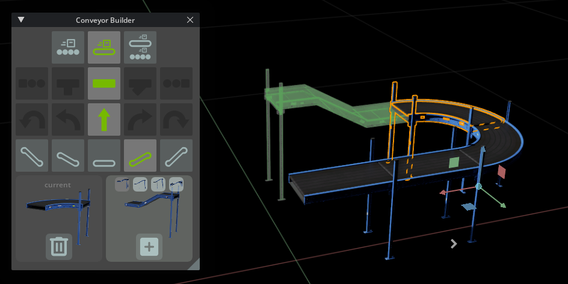
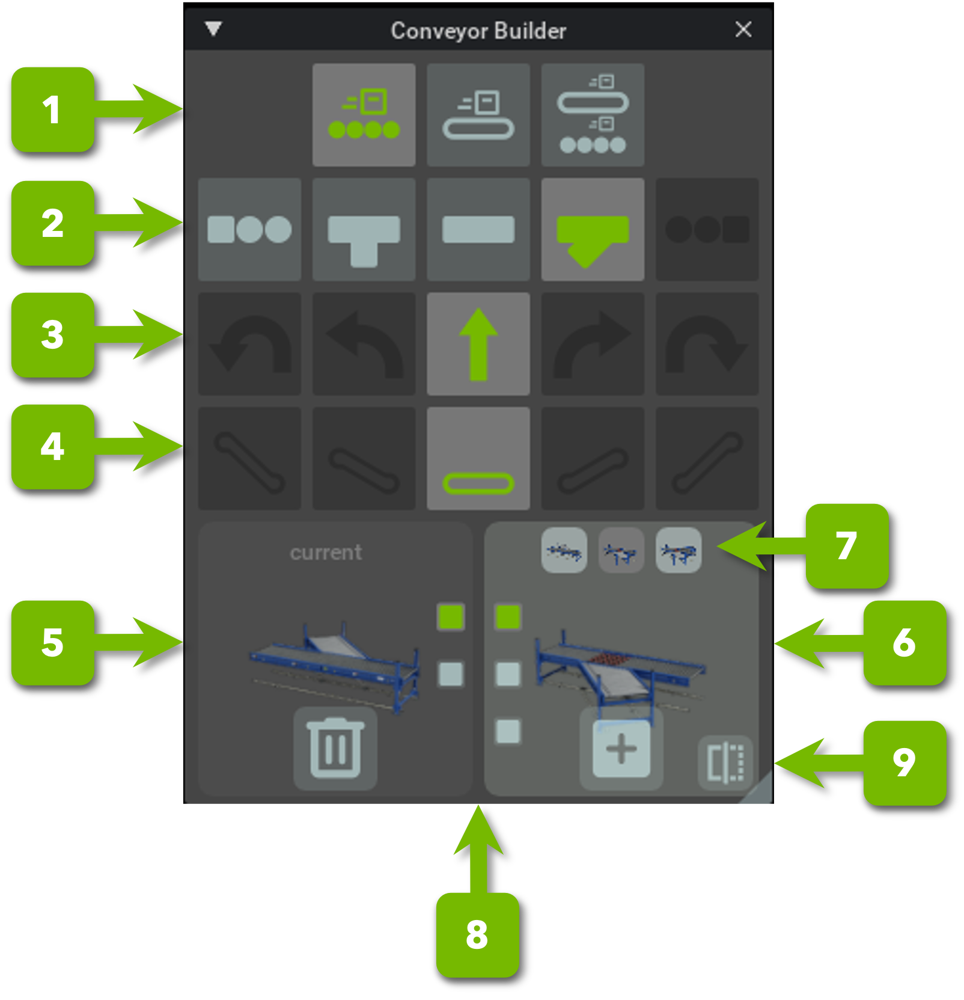

Conveyor Belt Utility#
About#
Conveyor Belt Utility 익스텐션은 NVIDIA Isaac Sim에서 강체를 컨베이어로 변환합니다.
Note
컨베이어 벨트 시뮬레이션의 더 맞춤화된 접근 방식을 위해 Custom conveyor belt simulation을 참조하세요.
Usage#
익스텐션을 활성화하려면:
Window > Extensions를 선택합니다.
conveyor를 검색합니다.isaacsim.asset.gen.conveyor.ui를 선택하고 Enable을 클릭합니다. 이렇게 하면 익스텐션과 UI가 모두 활성화됩니다.
익스텐션을 시작 시 자동으로 로드하려면, 익스텐션 관리자의 isaacsim.asset.gen.conveyor.ui 정보 패널 상단 근처의 Autoload를 클릭하세요.
컨베이어를 생성하려면:
스테이지에서 강체 또는 메시를 선택합니다.
Create > Isaac Sim > Warehouse Items > Conveyor를 선택하여 컨베이어 속도 및 애니메이션을 구동하는 Omniverse OmniGraph 노드를 생성합니다. 노드는 다음 속성을 제공합니다:
conveyorPrim: 컨베이어 속도를 받는 대상 프림입니다. 프림이 강체가 아니면 기본 충돌 모델로 자동 구성됩니다.
ConveyorNode당 단일 프림만 허용됩니다.Animate Direction: UV 맵에서 텍스처 애니메이션 방향입니다.
Animate Scale: 컨베이어 속도와 텍스처 애니메이션 속도 간의 비율입니다.
Animate Texture: 텍스처 애니메이션을 활성화합니다.
Curved: 컨베이어를 곡선으로 표시합니다. 설정하면 노드가 선형 속도 대신 각속도를 적용합니다. 각속도는 회전 축으로 작용하는 Direction 벡터를 따라 적용됩니다. Direction 벡터를 스케일링하면 속도가 조정됩니다: 1보다 큰 값은 유효 곡률 반경을 증가시키고 1보다 작은 값은 감소시킵니다. 예를 들어,
(0, 0, 1)은 Z축을 중심으로 회전합니다.Direction: 로컬 좌표에서 컨베이어 속도 방향입니다.
Enabled: 컨베이어를 활성화하거나 비활성화합니다.
Velocity: 컨베이어 속도입니다.
생성된 Omniverse OmniGraph는 Omniverse OmniGraph 프림을 선택하여 편집할 수 있는 속도 변수로 사전 구성되어 있습니다. 씬에서 여러 컨베이어를 동기화하려면 각 컨베이어의 읽기 변수 노드(read_speed)를 동일한 Omniverse OmniGraph 변수로 지정하세요.
벨트 움직임을 시각적으로 에뮬레이션하려면 타일 텍스처를 적용하고 텍스처가 컨베이어와 같은 방향으로, 일치하는 속도로 이동하도록 Animate 속성을 설정하세요.
또는 자체 Omniverse OmniGraph를 정의하고 ConveyorNode 인스턴스를 추가하세요. 이를 통해 단일 그래프에서 여러 컨베이어를 관리할 수 있습니다.
편의를 위해, Isaac Sim 애셋 패키지에는 Isaac/Props/Conveyors에 사전 구축된 컨베이어 부품이 포함되어 있습니다.
이 애셋에 대한 컨베이어 동작을 작성할 때 Belt 또는 Rollers 프림을 선택하세요. 이 프림들에는 컨베이어 표면을 정의하는 메시가 포함되어 있습니다.
Digital twin library conveyor system generator#
디지털 트윈 저작을 지원하기 위해 Tools > Conveyor Track Builder에서 컨베이어 시스템 생성기를 사용할 수 있습니다. 이 유틸리티는 컨베이어용 디지털 트윈 애셋 팩과 함께 제공되며, 구성 파일을 다른 애셋 폴더로 지정하여 커스텀 데이터셋도 허용합니다.
현재 선택이 컨베이어 데이터셋의 컴포넌트인 경우, 빌더는 구성으로 정의된 기존 컨베이어 엔드포인트 중 하나에 새 부품을 연결하려고 합니다. 그렇지 않으면 현재 선택 아래에 새 부품을 부모로 설정합니다.

빌더는 시스템 생성을 유연하게 유지하면서 최소한의 규칙 세트를 적용하도록 애셋과 느슨하게 통합됩니다. 그 절충으로 완성된 시스템에는 약간의 수동 정리가 필요할 수 있지만, 느슨한 결합으로 인해 배치 후 각 트랙을 완전히 사용자 정의할 수 있습니다.
User interface#
{kind=link}

참조 번호 |
옵션 |
설명 |
|---|---|---|
1 |
컨베이어 스타일 |
사용 가능한 컨베이어 스타일: Roller, Belt, 또는 Dual. |
2 |
트랙 유형 |
사용 가능한 트랙 유형: Start, straight, T-split, Y-split, 또는 end. |
3 |
곡률 |
트랙 곡률: 없음, 반(일반적으로 90도), 또는 전(일반적으로 180도), 좌우. |
4 |
높이 변화 |
진입점 기준 레벨로 측정된 트랙 높이 변화, 위 또는 아래. |
5 |
선택된 트랙 |
현재 선택된 트랙, 그 엔드포인트, 그리고 시스템에서 트랙을 제거하는 Delete 버튼을 표시합니다. |
6 |
새 트랙 |
삽입 대기 중인 부품을 표시합니다. 입력 엔드포인트와 트랙 변형을 선택하고 해당되는 경우 부품을 미러링할 수 있습니다. |
7 |
트랙 변형 |
현재 필터 선택과 일치하는 추가 변형을 표시합니다. |
8 |
선택된 엔드포인트 |
각 옵션은 트랙의 엔드포인트 중 하나에 해당합니다. 모든 엔드포인트가 연결된 경우를 제외하고 이미 사용 중인 엔드포인트는 숨겨집니다. |
9 |
미러 |
기본 벨트 방향을 따라 선택된 부품을 미러링합니다. |
Dataset#
데이터셋은 컨베이어 시스템을 조립하는 데 사용되는 USD 파일 모음입니다. 각 USD 파일은 다음을 해야 합니다:
기본 프림을 정의합니다. 해당 프림과 모든 자식은 애셋이 참조될 때 로드됩니다.
기본 프림에 단위 변환을 사용합니다(이동 및 회전 컴포넌트를 0으로 설정).
각 컨베이어 트랙을
Xform프림으로 정의하며, 모든 시각적 및 충돌 메시를 그 아래에 부모로 설정합니다.트랙의 진입 지점을 X축에 정렬하고 Y축 중앙에 배치합니다.
앵커 포인트를
Z = 0에서 Y축 중앙에 배치합니다. X축은 트랙의 기본 방향에 정렬되어야 합니다.트랙당 개별 재질을 지정합니다. 동일한 컨베이어 기본 프림을 공유하는 메시는 재질을 공유할 수 있습니다.
단일 기본 폴더 아래에 위치합니다. 애셋은 해당 폴더 외부의 파일을 참조할 수도 있습니다.
JSON 파일이 애셋 데이터셋과 함께 제공됩니다. UI 워크플로우에 필요한 메타데이터와 소스 애셋에 아직 포함되지 않은 경우 컨베이어 물리를 구성하는 데 사용되는 매개변수를 제공합니다.
{ "assets": { "ConveyorBelt_A01": { // File name of the asset, without the extension. "style": "DUAL", // Conveyor style, can be ROLLER, BELT, or DUAL "start_level": 0, // Conveyor level for the track, can be any positive number "angle": "HALF", // Conveyor turn type, can be NONE, HALF, FULL" "curvature": "SMALL", // Conveyor radius of curvature, can be NONE, SMALL, MEDIUM, LARGE. Currently not used by the filter. "ramp": "FLAT", // Ramp level. How many levels it increases or decreases start level, can be FLAT, ONE, TWO, THREE, FOUR. "type": "STRAIGHT", // Track Type, can be START, STRAIGHT (used for all single track types, including curves and ramps), Y_MERGE, T_MERGE, FORK_MERGE, END. "anchors": [ // All Prim children paths that correspond to endpoints on the asset. "", // This is the root of the conveyor, which is also an endpoint. "/Anchorpoint" // For all the other anchors, keep the trailing / on the child prim name ], "conveyor_nodes": { // All Child Prims to be configured as conveyors using the OmniGraph node. Each track should have its own configuration (in the case of merge and splits), even if it's of the same style "Rollers": { "animate_scale": 0.01, "animate_direction": [0.0, 1.0], "direction": [1.0, 0.0, -37.0], "curved": true }, "Belt": { "animate_scale": 0.5, "animate_direction": [1.0, 0.0], "direction": [0, 0.0, -37.0], "curved": true } } } } }
Note
엄격한 JSON은 주석을 허용하지 않습니다. 위의 코드 조각에는 각 필드를 설명하기 위한 인라인 주석만 포함되어 있습니다. 파일을 사용하기 전에 주석을 제거하세요, 그렇지 않으면 익스텐션이 파일 로드에 실패합니다.
완전한 참조는 익스텐션의 data 폴더에 있는 JSON 파일을 참조하세요.
Changing the configuration and dataset source#
데이터셋과 구성 파일을 자체 것으로 교체하려면:
Edit > Preferences > Conveyor Builder로 이동합니다.
구성 파일 경로와 Conveyor Assets Location을 설정합니다. 애셋은 Conveyor Assets Location에 나열된 폴더 내에 직접 있어야 합니다.
원래 설정을 복원하려면 Reset To Default를 클릭합니다.
Improving load time#
기본적으로 도구는 클라우드 호스팅 애셋 폴더에서 애셋을 읽으며 처음 사용 시 각 애셋을 다운로드합니다. 이로 인해 눈에 띄는 로딩 시간이 발생할 수 있습니다. 이를 줄이려면 애셋을 로컬에 다운로드하고 Conveyor Assets Location을 로컬 폴더로 지정하세요.
Available tracks#
{kind=link}
{kind=link}
{kind=link}
{kind=link}
{kind=link}
{kind=link}
{kind=link}
{kind=link}
{kind=link}
{kind=link}
{kind=link}
{kind=link}
{kind=link}
{kind=link}
{kind=link}
{kind=link}
{kind=link}
{kind=link}
{kind=link}
{kind=link}
{kind=link}
{kind=link}
{kind=link}
{kind=link}
{kind=link}
{kind=link}
{kind=link}
{kind=link}
{kind=link}
{kind=link}
{kind=link}
{kind=link}
{kind=link}
{kind=link}
{kind=link}
{kind=link}
{kind=link}
{kind=link}
{kind=link}
{kind=link}
{kind=link}
{kind=link}
{kind=link}
{kind=link}
{kind=link}
{kind=link}
{kind=link}
Custom conveyor belt simulation#
내장 물리 시뮬레이션의 대안으로, 커스텀 로직으로 컨베이어 벨트 표면과 운반하는 강체 간의 마찰력을 계산할 수 있습니다. 이 접근 방식은 마찰 모델에 대한 직접적인 제어를 제공하며 강체가 다른 속도로 실행되는 여러 컨베이어 벨트에 접촉하는 경우를 더 쉽게 처리할 수 있습니다.
컨베이어 벨트 독립 실행 예제는 이러한 구현 중 하나를 보여줍니다. standalone_examples/conveyor_belt에 위치합니다. 샘플을 실행하려면 NVIDIA Isaac Sim Python 런처(python.sh on Linux 또는 python.bat on Windows)를 사용하세요. 진입점은 cb_app.py입니다:
./python.sh ./standalone_examples/conveyor_belt/cb_app.py
샘플은 운반되는 강체와 컨베이어 벨트 섹션을 미리 등록합니다. 두 개의 헬퍼 클래스인 BodyManager와 ConveyorBeltManager가 등록을 관리합니다. 모든 강체와 컨베이어 벨트 섹션이 등록되면 이 클래스들은 커스텀 힘 계산에 필요한 데이터 버퍼를 할당합니다. 등록 시퀀스는 컨베이어 벨트 회로와 운반되는 강체를 구축하는 cb_scene.py에 나와 있습니다.
컨베이어 벨트로 운반될 강체를 다음과 같이 등록합니다:
body_manager.add_body(
"/World/body0",
body_material0_index
)
메서드는 강체의 USD 프림 경로와 재질 인덱스를 받습니다. 재질 인덱스는 다른 헬퍼 클래스인 MaterialPairManager에서 가져옵니다. 샘플이 마찰력을 직접 계산하기 때문에, 내장 시뮬레이션에서 사용하는 물리 재질은 마찰 계수를 0으로 사용해야 합니다. 그렇지 않으면 내장 마찰력이 커스텀 힘과 겹쳐집니다. 샘플은 자체 재질 시스템을 정의하고 재질 쌍에 마찰 계수를 지정하여 이를 해결합니다:
body_material0_index = material_pair_manager.add_transported_body_material_index()
conveyor_belt_material0_index = material_pair_manager.add_conveyor_belt_material_index()
material_pair_manager.set_material_pair_friction(body_material0_index, conveyor_belt_material0_index, 0.9)
벨트 움직임은 속도 필드로 설명됩니다. 샘플은 두 가지 필드 유형을 구현합니다:
직선 컨베이어 벨트 섹션을 위한 상수 속도 필드입니다.
곡선(선회) 컨베이어 벨트 섹션을 위한 피벗 포인트 속도 필드입니다.
헬퍼 클래스 VelocityFieldActuator가 이 필드를 생성합니다. 속도 필드가 주어지면 다음과 같이 컨베이어 벨트 섹션을 등록합니다:
target_velocity = wp.vec3(0.0, 0.5, 0.0)
velocity_field_id = velocity_field_actuator.add_constant_velocity_field(
target_velocity,
)
surface_normal = wp.vec3(0.0, 0.0, 1.0)
conveyor_belt_manager.add_conveyor_belt(
"/World/conveyor_belt0",
VELOCITY_FIELD_TYPE_CONSTANT_VELOCITY,
velocity_field_id,
surface_normal,
conveyor_belt_contact_processing_threshold,
conveyor_belt_material0_index,
)
이 호출은 컨베이어 벨트 섹션을 나타내는 지오메트리 프림의 USD 경로, 속도 필드 유형 및 속도 필드 ID가 필요합니다. 강체 등록과 마찬가지로 재질 인덱스가 필요합니다. 나머지 매개변수에 대한 자세한 내용은 샘플 소스를 참조하세요.
모든 강체와 컨베이어 벨트 섹션이 등록된 후, 헬퍼 클래스들이 마찰력 계산에 사용되는 버퍼를 할당합니다. 등록된 전체 프림 세트는 isaacsim.core.prims.RigidPrim 뷰를 구성하는 데도 사용됩니다. 이 뷰는 강체 시뮬레이션 상태를 노출하며, 특히 커스텀 마찰력을 도출하는 데 필요한 상세 접촉 정보를 제공합니다. 샘플은 Omniverse Warp를 사용하여 힘 계산을 구현하며, 이는 대부분의 데이터를 GPU에 유지합니다.
파일별 요약, 장단점, 현재 한계 및 제안된 확장을 포함한 더 깊은 이해를 위해 standalone_examples/conveyor_belt/README.md를 참조하세요.